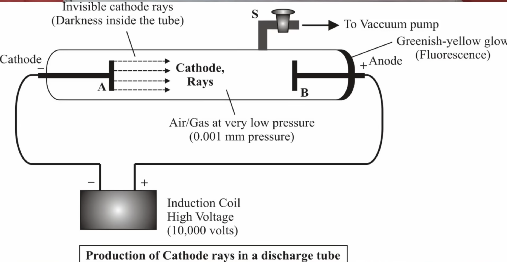
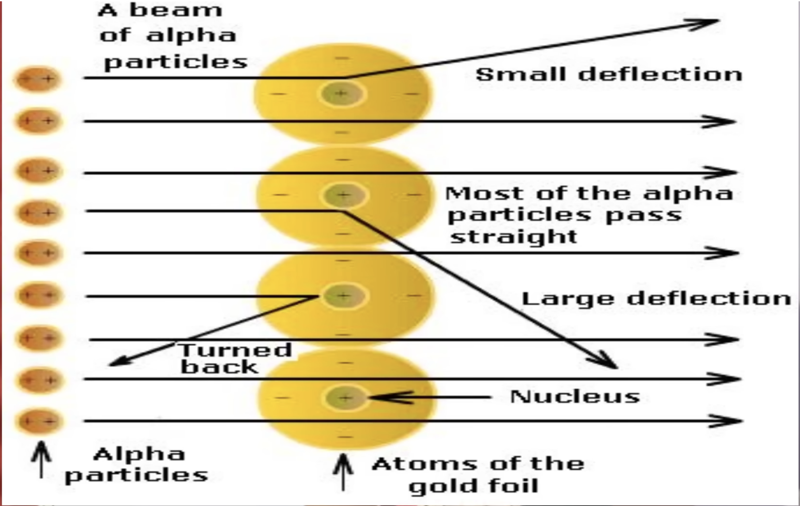

ATOMIC STRUCTURE : CATHODE RAY || RUTHERFORD ALPHA PARTICLE SCATTERING
EXPERIMENTYOUTUBE PLAYLIST LINK
Cathode Ray || Rutherford Alpha particle scattering experiment
Bohr’s Atomic Model
Atomic Spectrum || Hydrogen Spectrum
De Broglie Wavelength || Heisenberg’s Uncertainty Principle
Quantum Number’s || Pauli’s Exclusion Principle
Aufbau’s Principle || Rules for filling electrons
Hund’s Rule for Maximum Multiplicity
How to do Electronic Configuration
CATHODE RAY || RUTHERFORD ALPHA PARTICLE SCATTERING
Atomic Structure: Roadmap + Dalton Limits (00:15)
Cathode Rays and Electron Discovery (04:30)
Electron charge to mass ratio, Millikan electronic charge, Electron
Mass
Anode (Canal) Rays and Proton Discovery (22:27)
J. J. Thomson Atomic Model (34:09)
Rutherford Alpha Scattering: Setup + Observations (36:50)
Rutherford Nuclear Model: Key Conclusions (50:01)
Failure of Rutherford Model: Stability + Line Spectrum (56:40)
Scope of the chapter: subatomic particles \(\rightarrow\) early
atomic ideas \(\rightarrow\) quantum mechanical view (later)
\(\rightarrow\) quantum numbers and wave ideas.
Dalton atomic theory (historical): “atom is smallest,
indivisible” was reasonable for its time but fails after
subatomic discoveries.
Why Dalton statements fail:
“Atoms of different elements always differ in mass” fails
due to isobars.
“All atoms of the same element are identical” fails due to
isotopes (e.g., hydrogen isotopes).
Key transition: the model changes when experimental evidence
reveals particles inside the atom.
Cathode ray discharge tube essentials:

Glass discharge tube with two electrodes: cathode (negative)
and anode (positive).
Evacuation pump lowers gas pressure to about \(10^{-3}\) mm
Hg.
High potential difference applied (order of \(\sim 1000\)
V).
Fluorescent screen (e.g., ZnS) placed to detect impact.
Anode often perforated so the beam can pass through.
Observation: an invisible beam travels from cathode to anode and
causes fluorescence on the screen \(\Rightarrow\) “cathode
rays”.
Reason for very low pressure: fewer gas molecules
\(\Rightarrow\) fewer collisions \(\Rightarrow\) fast particles
reach the screen effectively.
Properties of cathode rays (as described):
Negatively charged: deflected toward the positive plate in
an electric field.
Travel in straight lines:
Shadow formation when an opaque object blocks the path.
Have kinetic energy: rotate a light paddle wheel placed in
the path.
Made of particles (mass inferred from kinetic energy
concept).
Deflected by magnetic field \(\Rightarrow\) moving charged
particles.
Produce fluorescence (screen glows).
When striking heavy metal targets at high speed, can produce
X-rays (mentioned as an observed effect).
Conclusion: the particle constituent of cathode rays is
identified as the electron.
Key evidence for universality of electron: changing the gas and
electrode material does not change cathode-ray properties
\(\Rightarrow\) the same fundamental particle exists in all
atoms.
J. J. Thomson measured charge-to-mass ratio of cathode-ray
particles:
\(\dfrac{e}{m} \approx 1.75 \times 10^{11}\ \text{C
kg}^{-1}\) (value stated in lecture).
\(\dfrac{e}{m}\) does not depend on nature of gas or
electrode material.
Millikan oil drop experiment: measured electronic charge:
\(e \approx 1.6 \times 10^{-19}\ \text{C}\) (accepted value
quoted as \(\sim 1.602 \times 10^{-19}\ \text{C}\)).
Electron mass obtained using \(e\) and \(e/m\):
\(m_e \approx 9.1 \times 10^{-31}\ \text{kg}\) (approximate
value stated).
Summary linkage: cathode rays \(\rightarrow\) electron; Thomson
\(\rightarrow\) \(e/m\); Millikan \(\rightarrow\) \(e\); combine
\(\rightarrow\) \(m_e\).
Modified discharge tube conditions (for anode/canal rays):
Gas pressure higher than Thomson’s case: about \(10^{-1}\)
mm Hg (vs. \(10^{-3}\) mm Hg).
Perforated cathode (holes in cathode) used.
Observation: colored rays move from anode toward cathode
(positive \(\rightarrow\) negative) \(\Rightarrow\) positively
charged constituents.
Origin (conceptual): gas molecules ionize; electrons move toward
the anode, leaving positive ions that accelerate toward the
cathode \(\Rightarrow\) “anode/canal rays”.
Important clarification: anode rays are not universally
“protons”; they are gaseous positive ions, so their properties
depend on the nature of the gas.
Charge-to-mass ratio for anode rays varies with gas; maximum
\(\dfrac{q}{m}\) observed when using hydrogen (lightest gas).
Hydrogen case: the positive ion is essentially \( \text{H}^+ \)
\(\Rightarrow\) identified as the proton.
Proton data stated:
Charge magnitude: \(+1.6 \times 10^{-19}\ \text{C}\).
Mass: \(\approx 1.625 \times 10^{-27}\ \text{kg}\)
(approximate value stated).
Mass relation: \(m_p \approx 1837\, m_e\).
Core idea (plum pudding / watermelon model):
Atom is a sphere of uniformly spread positive charge.
Electrons are embedded within this positive sphere (like
seeds in watermelon / dry fruits in pudding).
Atom is electrically neutral: total positive charge equals total
negative charge.
Limitation (as indicated): later experiments on atomic structure
do not support “mass/positive charge spread everywhere” picture.
Alpha particle basics (as used here):
Charge \(+2\).
Mass \(\approx 4\) amu; effectively helium nucleus (two
protons, two neutrons).

Radioactive alpha source.
Thin gold foil target.
ZnS fluorescent screen arranged to detect scattered
particles (including back side detection).
Key observations:
\(\sim 99.9\%\) alpha particles pass through without
deviation (straight through foil).
Some alpha particles deflect by small angles.
Very few deflect by large angles; about 1 in 20000 returns
back (nearly \(180^\circ\) scattering).
Interpretation is driven by the above three observations.
Most of the atom is empty space: supports the near-straight
passage of most alpha particles.
Positive charge and most of the mass concentrated in a very
small central region (nucleus).
Nuclear size comparison stated:
Atomic size \(\sim 10^{-10}\) m.
Nuclear size \(\sim 10^{-15}\) m.
Atom is \(\sim 10^{5}\) times larger than nucleus in linear
dimension (statement in lecture).
Electron motion idea (solar-system analogy):
Electrons revolve around the nucleus in closed circular
orbits (as stated).
Electrostatic attraction provides the required centripetal
force conceptually.
Force-balance statement: electrostatic force is equated to
centripetal force to derive relations (later extended by
Bohr).
Failure 1: cannot explain stability of atom.
Maxwell’s electromagnetic idea used: any accelerated charged
particle emits radiation and loses energy.
In Rutherford model, electron in circular motion has
changing velocity direction \(\Rightarrow\) acceleration.
Hence electron should radiate energy \(\Rightarrow\) spiral
inward and collide with nucleus \(\Rightarrow\) atom would
collapse (instability).
Exam phrasing emphasized: “cannot explain stability of
atom”.
Failure 2: cannot explain line (discrete) spectrum of atoms.
Line spectrum idea: light interacting with a gas does not
give a continuous distribution; some lines/colors are
missing or selectively present depending on the gas.
Different gases show different discrete patterns (example
contrast mentioned between hydrogen and helium).
Both absorption and emission cases are acknowledged, to be
detailed later when spectrum is studied.
Next transition (as signposted): a later atomic model is
introduced after these failures (not covered in this transcript
segment).